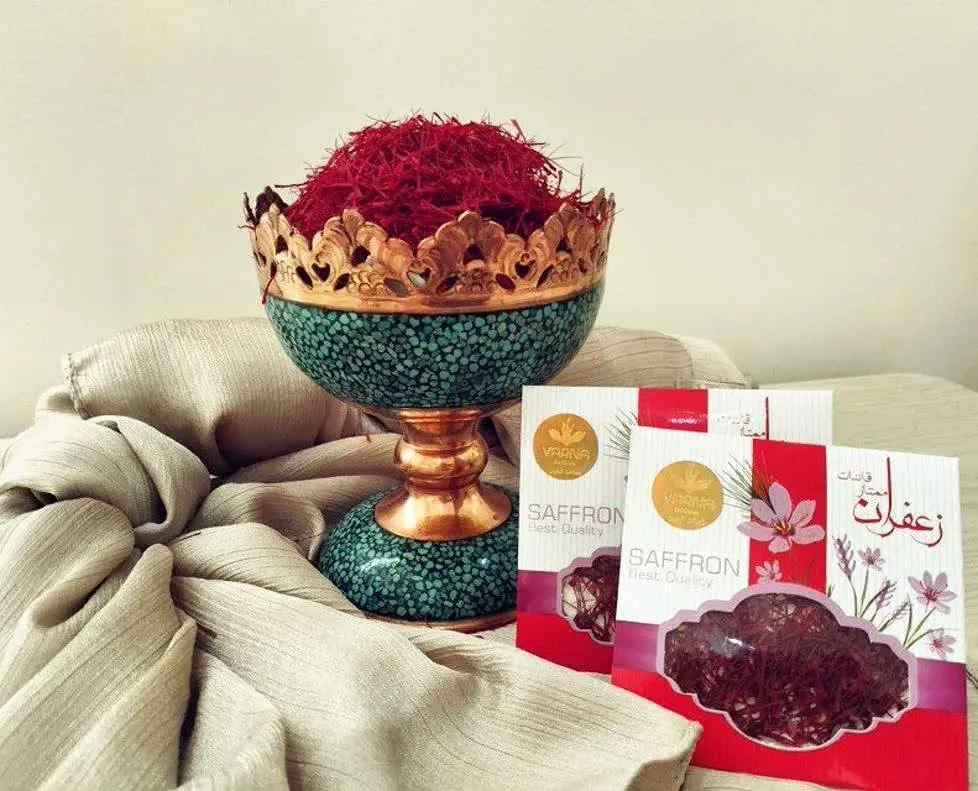
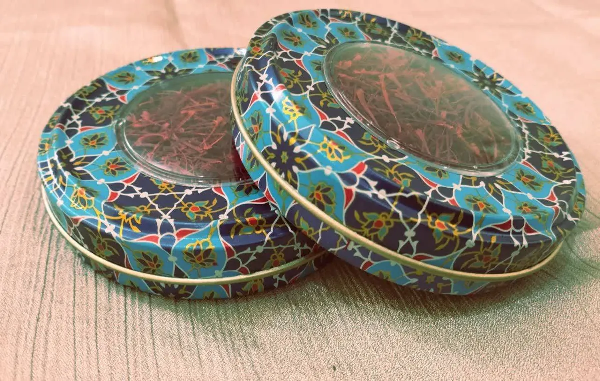

داستان ما
از مزرعهٔ ورامین تا سفرهٔ شما
وارنا یک کسبوکار خانوادگی است. مزرعهٔ زعفران را من، پدرم و داییام با هم اداره میکنیم و محصولاتمان را بدون واسطه به دست مشتری میرسانیم.
علاوه بر زعفران سوپر نگین، ریشهٔ زعفران و پودر زعفران هم داریم و هل سبز وارداتی هم در سبد محصولاتمان است. بستهبندیها از پاکت و شیشه تا پکهای هدیهٔ مخملی و چوبی هستند.
مزرعهٔ خانوادگی
ورامین
فروش مستقیم


رنگ و بوی
زندگی
زندگی
۱۵۰٬۰۰۰گل، تقریباً برای تولید یک کیلو زعفران
سحرگاهگلها را با دست و پیش از باز شدن کامل میچینند
پاییزفصل برداشت زعفران